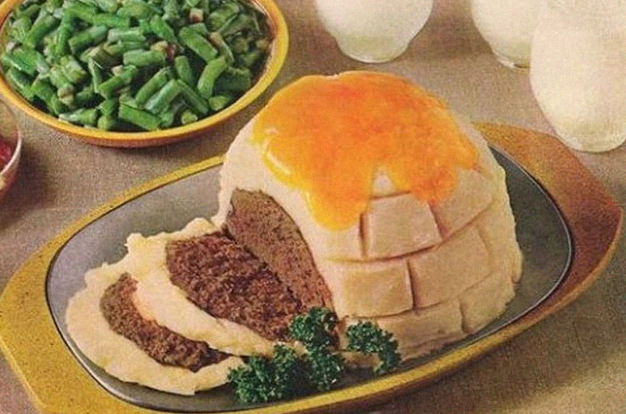

Gorgeous Meat Igloo

Description
"Gorgeous Meat Igloo" is a culinary marvel, combining the heartiness of various meats with the creative presentation of an
igloo structure. This distinctive dish blends the rich flavors of ground beef, pork, and an assortment of spices,
carefully crafted into the iconic shape of an igloo. The Meat Igloo's unique design is not only visually appealing
but also serves to enhance the melding of flavors, as the dome-like shape allows for even cooking and the retention
of juices within the meat. The exterior is adorned with thinly sliced bacon, creating a textured, crispy outer layer
that complements the succulent, spiced meat inside. A doorway fashioned from sausages adds a playful touch and provides
additional depth of flavor. The result is a robust, flavor-packed creation that is both a feast for the eyes and a delight
for the palate, perfect for impressing guests at a dinner party or celebrating a special occasion with a twist on
traditional meat dishes.
Ingredients
- Ground Beef - 2 pounds
- Ground Pork - 1 pound
- Bacon Slices - 12, thin
- Fresh Sausages - 4
- Bread Crumbs - 1 cup
- Egg - 1 large
- Garlic Powder - 1 teaspoon
- Onion Powder - 1 teaspoon
- Paprika - 1 teaspoon
- Dried Oregano - 1/2 teaspoon
- Salt - 1 teaspoon
- Black Pepper - 1/2 teaspoon
- Worcestershire Sauce - 2 tablespoons
- Tomato Paste - 1 tablespoon
- Fresh Parsley - for garnish (optional)
Steps
- Preheat your oven to 375°F (190°C).
- In a large bowl, mix together ground beef, ground pork, bread crumbs, egg, garlic powder, onion powder, paprika, dried oregano, salt, black pepper, Worcestershire sauce, and tomato paste.
- Gently form the meat mixture into a dome shape on a baking sheet lined with parchment paper, resembling an igloo.
- Carefully wrap the bacon slices around the dome, covering it entirely to form the outer layer of the igloo.
- Place the sausages at the front of the meat dome to create the 'entrance' to the igloo.
- Bake in the preheated oven for about 45-55 minutes, or until the meat is thoroughly cooked and the bacon is crispy.
- Check the internal temperature of the igloo using a meat thermometer to ensure it has reached a safe minimum internal temperature of 160°F (71°C) for ground beef and pork.
- Once baked, remove the igloo from the oven and let it rest for about 10 minutes before serving.
- If desired, garnish with fresh parsley for a touch of color.
- Carefully transfer the meat igloo to a serving platter.
- Slice into the igloo to serve, ensuring each portion includes some of the bacon shell and sausage entrance.
- Enjoy your Meat Igloo as a unique and hearty centerpiece for your meal.
Wanna get back to check another recipes?
Click here!